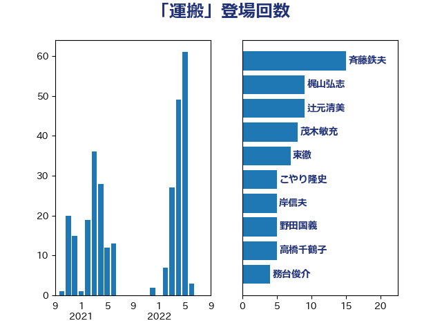

単語「運搬」

| 斉藤鉄夫 | 公明党 | 15 回 |
| 梶山弘志 | 自由民主党 | 9 回 |
| 辻元清美 | 立憲民主党 | 9 回 |
| 茂木敏充 | 自由民主党 | 8 回 |
| 東徹 | 日本維新の会 | 7 回 |
| こやり隆史 | 自由民主党 | 5 回 |
| 岸信夫 | 自由民主党 | 5 回 |
| 野田国義 | 立憲民主党 | 5 回 |
| 高橋千鶴子 | 日本共産党 | 5 回 |
| 務台俊介 | 自由民主党 | 4 回 |
| 徳永エリ | 立憲民主党 | 4 回 |
| 田村貴昭 | 日本共産党 | 4 回 |
| 牧山ひろえ | 立憲民主党 | 3 回 |
| 稲富修二 | 立憲民主党 | 3 回 |
| 緑川貴士 | 立憲民主党 | 3 回 |
| 長妻昭 | 立憲民主党 | 3 回 |
| 青木愛 | 立憲民主党 | 3 回 |
| 井原巧 | 自由民主党 | 2 回 |
| 安江伸夫 | 公明党 | 2 回 |
| 山口壯 | 自由民主党 | 2 回 |
| 山本剛正 | 日本維新の会 | 2 回 |
| 山添拓 | 日本共産党 | 2 回 |
| 森まさこ | 自由民主党 | 2 回 |
| 渡辺周 | 立憲民主党 | 2 回 |
| 石原宏高 | 自由民主党 | 2 回 |
| 芳賀道也 | 国民民主党 | 2 回 |
| 野上浩太郎 | 自由民主党 | 2 回 |
| 長浜博行 | 無所属 | 2 回 |
| 下条みつ | 立憲民主党 | 1 回 |
| 中島克仁 | 立憲民主党 | 1 回 |
| 中川康洋 | 公明党 | 1 回 |
| 中川郁子 | 自由民主党 | 1 回 |
| 中野洋昌 | 公明党 | 1 回 |
| 井上信治 | 自由民主党 | 1 回 |
| 伊藤信太郎 | 自由民主党 | 1 回 |
| 住吉寛紀 | 日本維新の会 | 1 回 |
| 佐藤茂樹 | 公明党 | 1 回 |
| 加田裕之 | 自由民主党 | 1 回 |
| 加藤鮎子 | 自由民主党 | 1 回 |
| 堤かなめ | 立憲民主党 | 1 回 |
| 大口善徳 | 公明党 | 1 回 |
| 宮内秀樹 | 自由民主党 | 1 回 |
| 山本博司 | 公明党 | 1 回 |
| 川田龍平 | 立憲民主党 | 1 回 |
| 杉尾秀哉 | 立憲民主党 | 1 回 |
| 水岡俊一 | 立憲民主党 | 1 回 |
| 江藤拓 | 自由民主党 | 1 回 |
| 河野太郎 | 自由民主党 | 1 回 |
| 浅田均 | 日本維新の会 | 1 回 |
| 浅野哲 | 国民民主党 | 1 回 |
| 清水貴之 | 日本維新の会 | 1 回 |
| 熊野正士 | 公明党 | 1 回 |
| 玉木雄一郎 | 国民民主党 | 1 回 |
| 田名部匡代 | 立憲民主党 | 1 回 |
| 田村憲久 | 自由民主党 | 1 回 |
| 矢倉克夫 | 公明党 | 1 回 |
| 石井拓 | 自由民主党 | 1 回 |
| 石川昭政 | 自由民主党 | 1 回 |
| 福岡資麿 | 自由民主党 | 1 回 |
| 秋野公造 | 公明党 | 1 回 |
| 穂坂泰 | 自由民主党 | 1 回 |
| 竹谷とし子 | 公明党 | 1 回 |
| 篠原豪 | 立憲民主党 | 1 回 |
| 自見はなこ | 自由民主党 | 1 回 |
| 菅義偉 | 自由民主党 | 1 回 |
| 萩生田光一 | 自由民主党 | 1 回 |
| 藤川政人 | 自由民主党 | 1 回 |
| 角田秀穂 | 公明党 | 1 回 |
| 赤嶺政賢 | 日本共産党 | 1 回 |
| 赤羽一嘉 | 公明党 | 1 回 |
| 足立敏之 | 自由民主党 | 1 回 |
| 輿水恵一 | 公明党 | 1 回 |
| 鈴木俊一 | 自由民主党 | 1 回 |
| 鈴木敦 | 国民民主党 | 1 回 |
| 阿達雅志 | 自由民主党 | 1 回 |
| 青山繁晴 | 自由民主党 | 1 回 |
| 青柳仁士 | 日本維新の会 | 1 回 |
| 須藤元気 | 無所属 | 1 回 |
| 高橋光男 | 公明党 | 1 回 |
| 高良鉄美 | 無所属 | 1 回 |